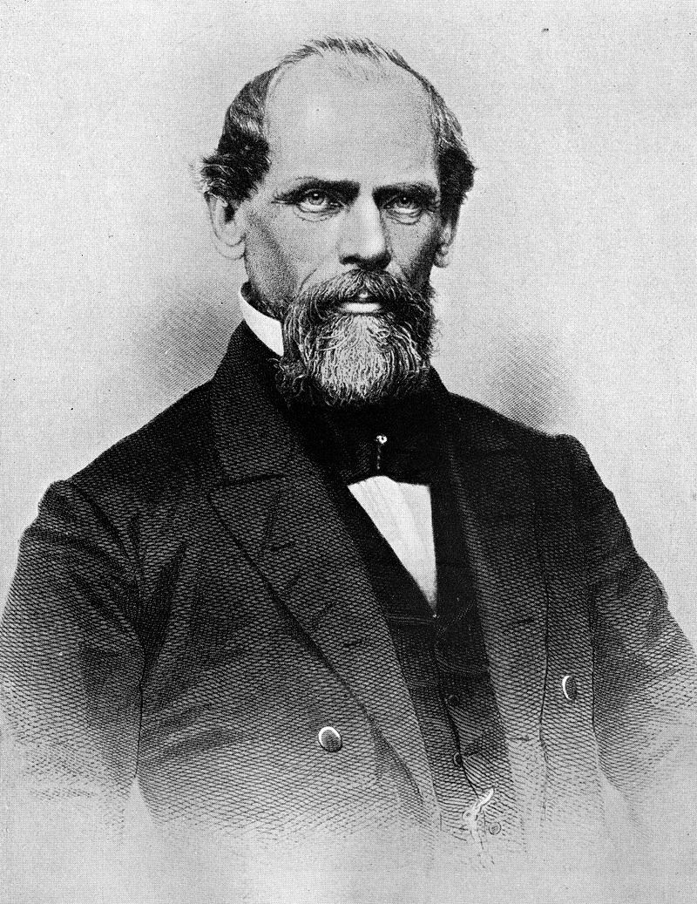
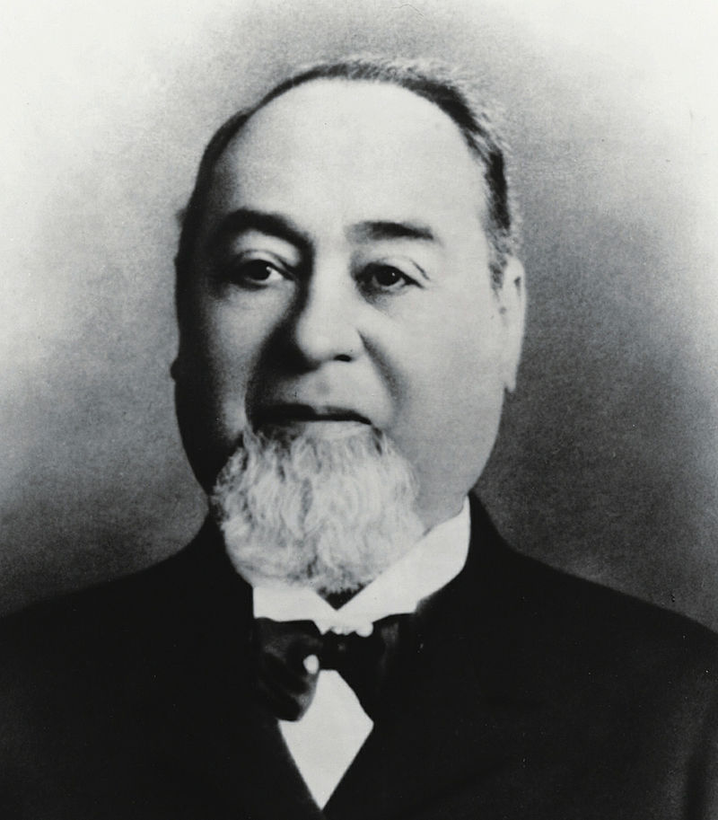

Heidi Klum
Heidi Klum (legal name Heidi Kaulitz after recent marriage) was born on June 1st 1973 in Bergisch Gladbach, Germany...
Sandra Bullock

Sandra Bullock was born on the 26th of July 1964 in Airlington, Virgina. At the age of 18 she had both American and German citizenship...
Albert Einstein

Albert Einstein is the most famous physicist in history. He was born in Ulm on 14 March 1879...
Fred Astaire

Fred Astaire was born on 10th May in 1899 in Berlin and died on 22nd June in 1987 in Los Angeles. His mother Johanna Ann Austerlitz was a daughter of Protestant German immigrants from East Prussia...
Steinway & Sons
Steinway & Sons, also known as Steinway, is a German-American high quality piano company. It was founded by the German piano builder Heinrich Engelhard Steinweg...
Wernher Von Braun
Wernher von Braun (born in Wirsitz, German Reich, on March 23rd, 1912) was a German rocket engineer...
Johann August Röbling
Johann August Röbling, a German-American engineer, was born in Mühlhausen, Thuringia, in 1806...

Dwight D. Eisenhower
Dwight D. Eisenhower was the commanding general of the victorious forces in Europe during World War II...
Hannah Arendt
Hannah Arendt was a Jewish German-American political theorist and publicist. She worked as a journalist...
Hans Zimmer
On September 12th 1957 little Hans Zimmer breathes his first breath and gives Frankfurt am Main the honor to be the birthplace of...
Levi Strauss
Levi Strauss, born Löb Strauss in Buttenheim, German Confederation, was a businessman with the first...
John Steinbeck
John Ernst Steinbeck was born on 27/2/1902 in Salinas, California. He was an US-American author with German-Irish ancestry.